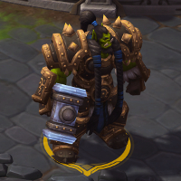
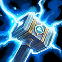
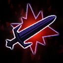
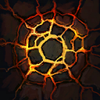
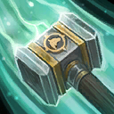

Thrall
Welcome to our Thrall guide for Heroes of the Storm. Here you will learn everything you need to know in order to play Thrall in a competitive environment, whether you play on your own or with a team.
General Earthquake Build
| Level 1 | Level 4 | Level 7 | Level 10 | Level 13 | Level 16 | Level 20 |
|---|---|---|---|---|---|---|
|  |  |  |  |
The General Earthquake Build is, as the name suggests, compatible with a variety of team compositions. It is a fairly safe build, that allows you perform well in the majority of games you play. We do, however, strongly recommend reading the Talents section, since Thrall has several situational talents that can improve his overall combat performance.
Lightning Poke Build
| Level 1 | Level 4 | Level 7 | Level 10 | Level 13 | Level 16 | Level 20 |
|---|---|---|---|---|---|---|
We recommend the Lightning Poke Build if the enemy team composition features multiple long range Assassins, such as Chromie, Kael'thas, or Valla. These elusive targets are often hard to catch when playing as Thrall, which makes his own poking abilities much more valuable. Defensive talents, such as Spell Shield Icon Spell Shield at Level 13 and Bolt of the Storm Icon Bolt of the Storm at Level 20 make Thrall quite resilient to enemy ability damage, which allows him to close in on his target more safely. If the enemy team features Basic Attackers instead of Spellcasters, use Grace Of Air Icon Grace Of Air instead of Spellshield.
Go Back